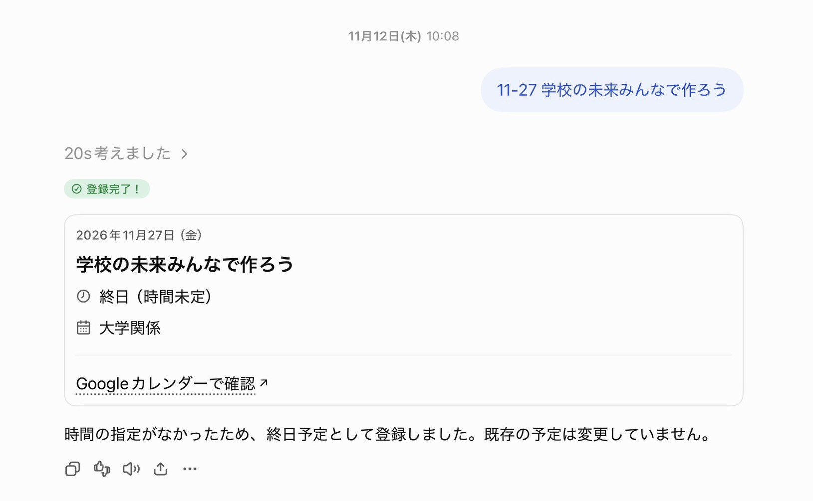

iPadの初期セットアップ
iPadを買ったら、授業で使うアプリと大学のサイトへのショートカットを先にそろえておくと楽です。私が使っているものもついでに載せておきます。
入れておくアプリ
とりあえず大学用のメールをOutlookで、授業のファイルをOneDriveで開けるところまでやっておきましょう。あとは使いそうなものから入れればOKです。
- 大学の連絡・ノート
- Outlook、OneNote、OneDrive、Teams、大学生協アプリ、Goodnotes
- レポート・発表
- Word、Excel、PowerPoint、Google ドキュメント、Google スプレッドシート、Google スライド、Google Drive
- Googleまわり
- Chrome、Gmail、Google カレンダー、Google マップ
- 印刷
- セブン‐イレブン マルチコピー、ローソンやファミリーマートなどで使える PrintSmash
- 生活・移動
- ウェザーニュース、Amazon、Yahoo!乗換案内
- 連絡・SNS
- LINE、Twitter、Instagram
- イラスト・画面共有
- ibisPaint、3uAirPlayer
- 生成AI
- Gemini、Muse、Claude、NotebookLM、ChatGPT
コンビニの印刷アプリは、近所や大学の近くで使う店の分を入れておくと楽です。Officeなどのダウンロード先はアプリ一覧に載せています。
Chromeからショートカットを作る
私はChromeからホーム画面に追加する方法がおすすめです。Chromeで登録したいページを開き、アドレスバー横の共有ボタンから「ホーム画面に追加」を選びます。名前を確認して「追加」を押せばOKです。
- 学芸ポータル
- WebClass（学芸ポータルからWebClassを開いて、そのページを登録）
- 学生情報トータルシステム
私が使っている＋α
- 予定追加。ChatGPTとGoogleカレンダーを連携させています。日付と予定を文章で送って登録する形です。
- 空き教室検索。空きコマに作業する場所を探すときに使っています。
- Task Pocket。課題や、あとでやることをまとめておくのに使っています。

設定は充電上限くらい
設定は特にいじらなくても大丈夫です。しいて言えば、バッテリーの劣化を抑えたい人は、対応機種なら「設定 → バッテリー → バッテリーの状態」で充電上限を80％にできます。購入記事でおすすめしたiPad Air（第5世代）にはこの項目がないので、その場合はそのままでOKです。